海のいきもの
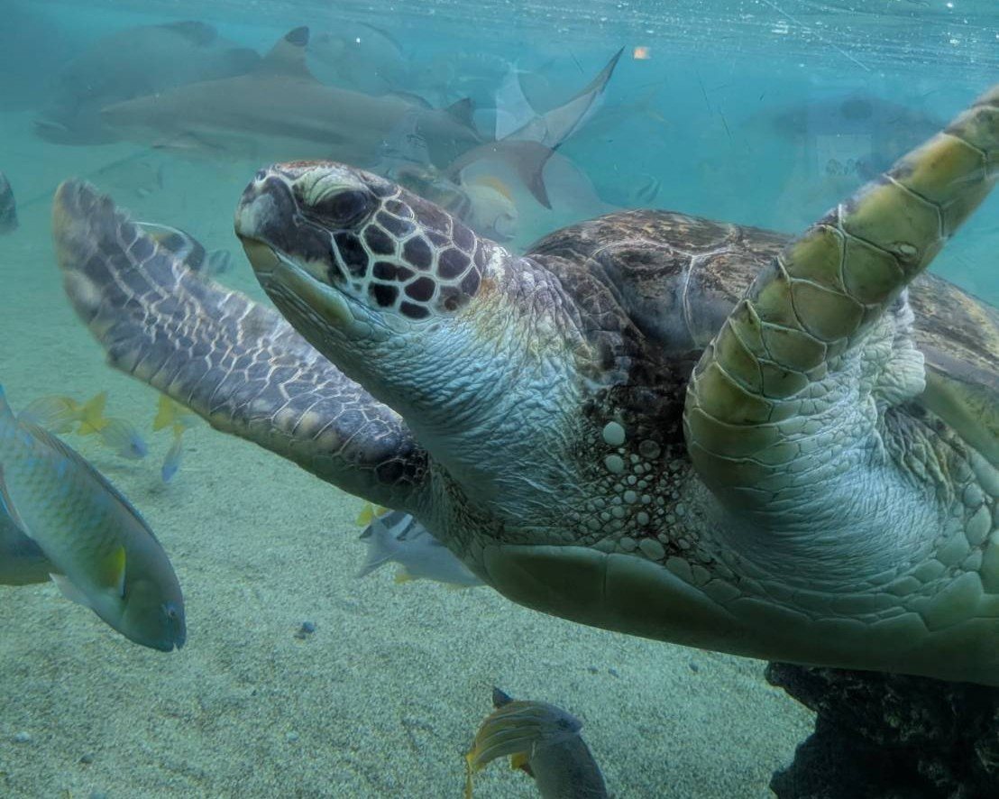
アオウミガメ
アオウミガメは、世界の海に生息する大型のカメです。体長は最大1.5メートル、体重は最大700キロに達します。主にプランクトンを食べ、海の生態系において重要な役割を果たしています。
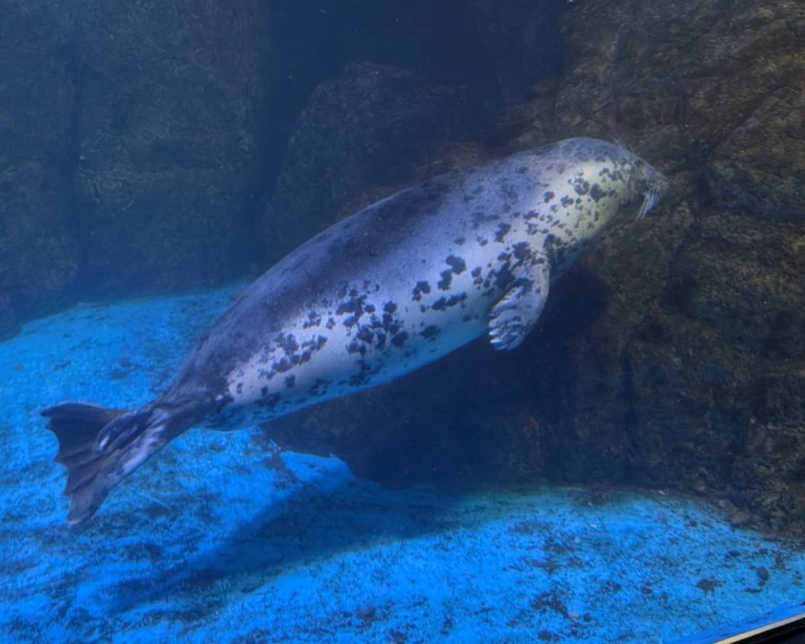
ハイイロアザラシ
ハイイロアザラシは、他の種類のアザラシに比べ鼻づらが長いのが特徴。特にオスが際立っている。灰色の体が名前の由来になっているが、稀に異なる体色の個体もいる。
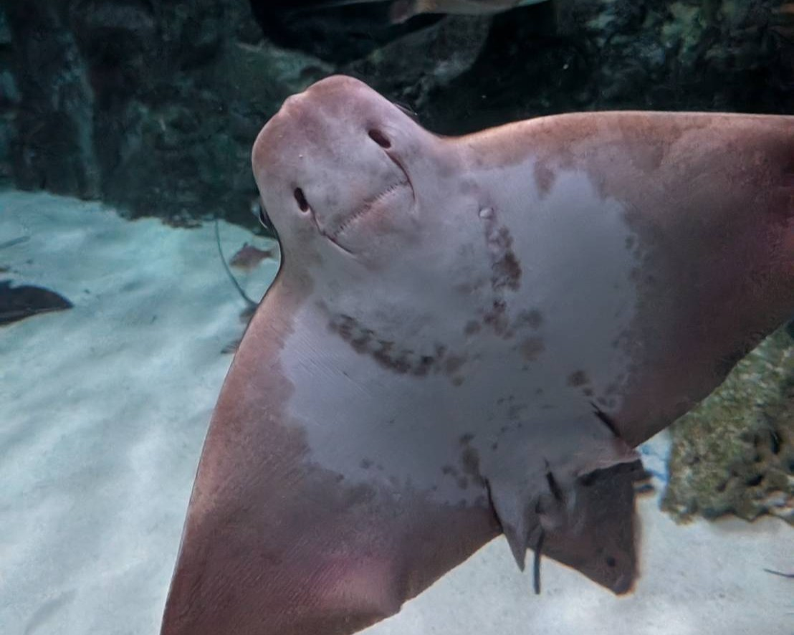
トビエイ
トビエイは、エイ目トビエイ科に属する海産魚の総称で、大きな胸ビレを羽ばたかせ「飛ぶように」泳ぐのが特徴で、尾に毒針を持つものが多い大型のエイです。日本近海にも数種が分布し、水中を群れで移動したり、水面に飛び上がったりする姿が見られます。
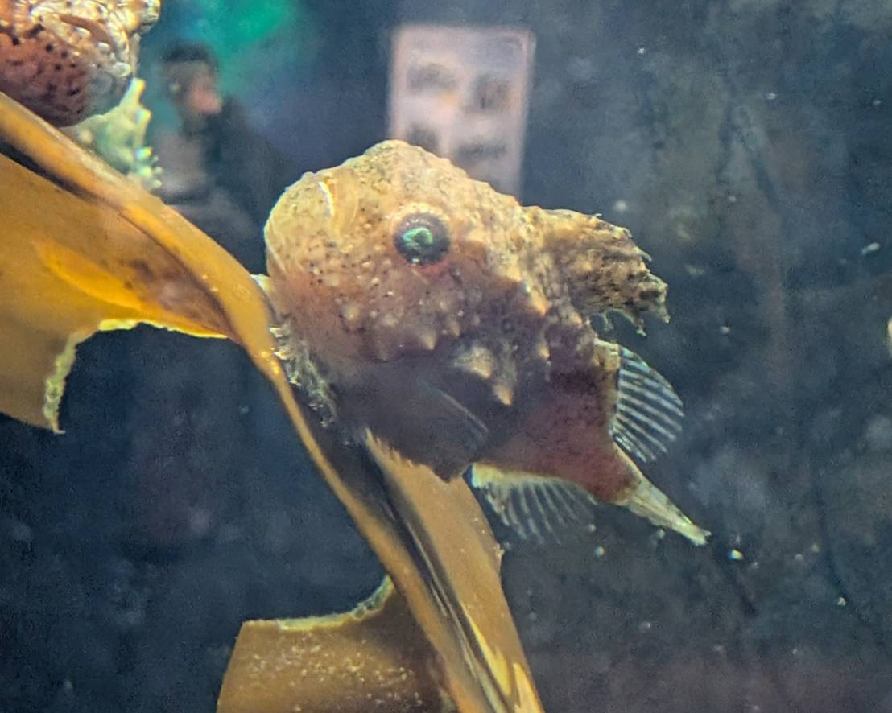
フウセンウオ
フウセンウオは、お腹に吸盤状のヒレを持つ変わり者。泳ぎが不得意なため、岩や海藻に流されないように張り付いて生活している。微笑んでいるような顔が可愛らしい北に住むアイドル魚
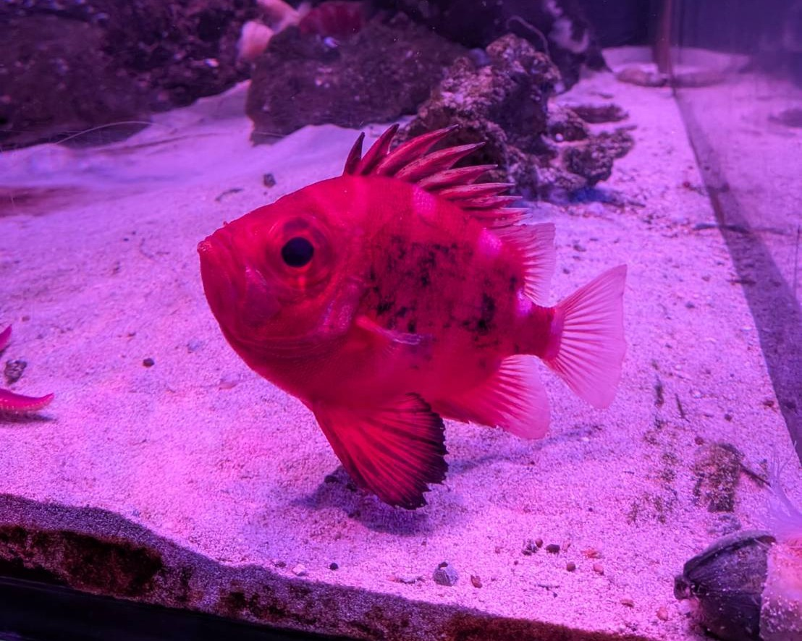
クルマダイ
クルマダイは、キントキダイ科に属する赤みがかった深海魚で、丸くて平たい体形が車輪のように見えることや、大きな目が特徴の白身魚です。正式名称は「マトウダイ」ですが、地域によってはクルマダイと呼ばれ、刺身、煮付け、塩焼きなどで非常に美味しく食べられ、特に産地では安価で取引されることも多い、旬の魚です。
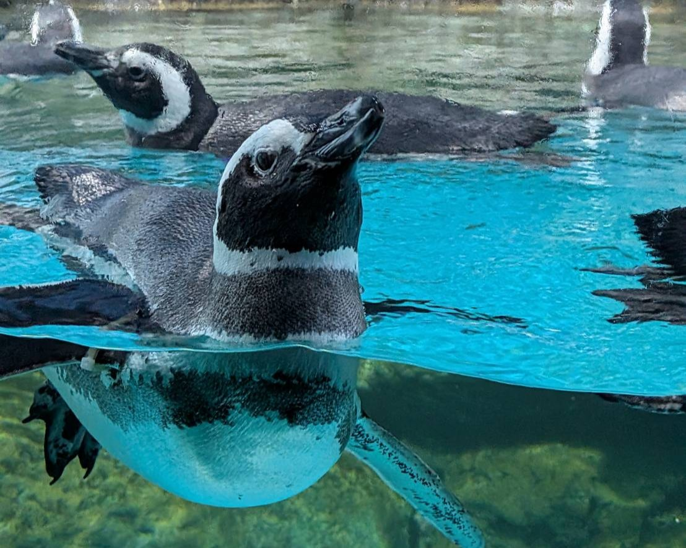
マゼランペンギン
マゼランペンギンは、胸元の2本の黒いラインが特徴的。植物や岩陰に穴を掘って巣をつくり、卵は2個産む。繁殖期を終えると海で過ごすが、ペアの絆が強く、次の繁殖期にはほとんどが再会し、同じ巣で繁殖を行う。
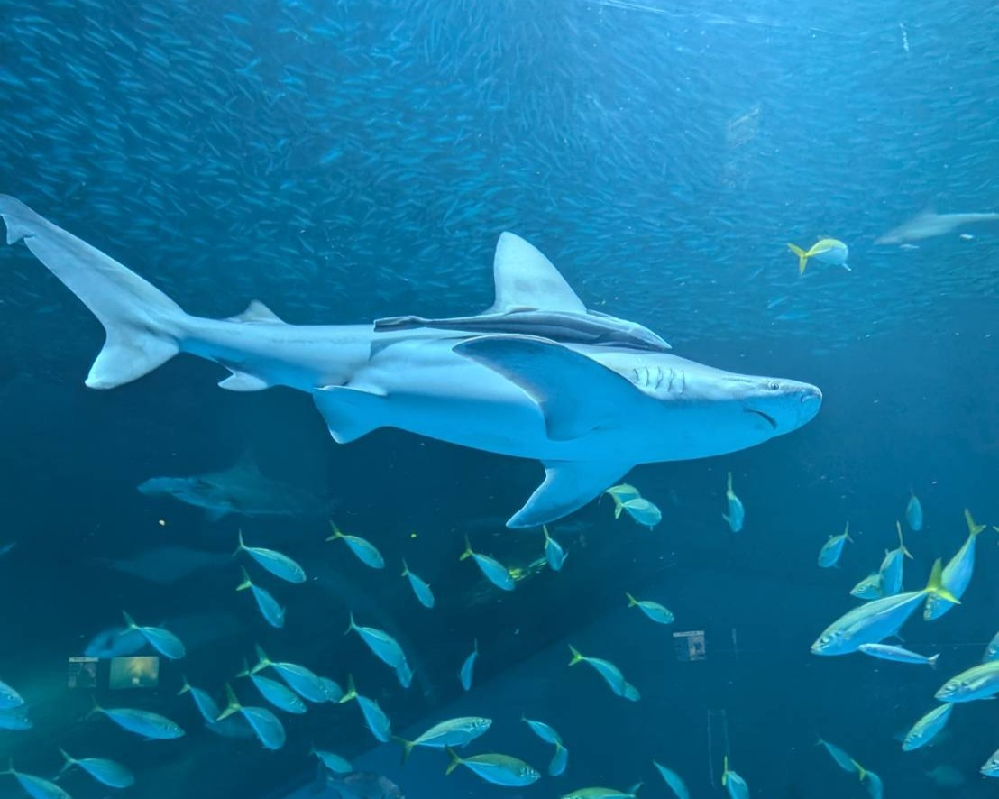
メジロザメ
メジロザメは、南日本などの温・熱帯域に分布しているが、東京湾や相模湾にも黒潮の影響により回遊してくる。メジロザメの仲間では背ビレが大きい特徴があり、見分けしやすい。
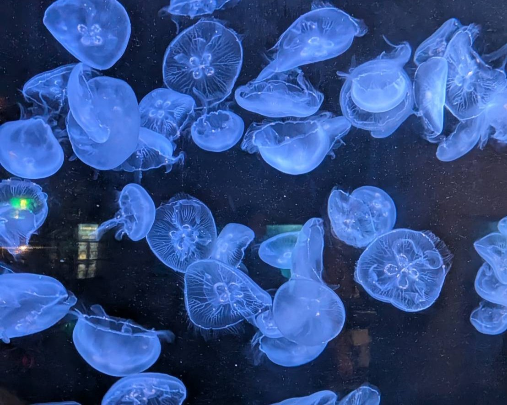
ミズクラゲ
ミズクラゲは、世界中の温帯から熱帯の海に生息し、日本近海でも最もよく見られる半透明のクラゲで、傘の中央に見える4つの馬蹄形（ようじょうけい）の生殖腺が目のように見えることから「ヨツメクラゲ」とも呼ばれ、刺胞毒は持ちますが刺されても痛みは軽いのが特徴です。
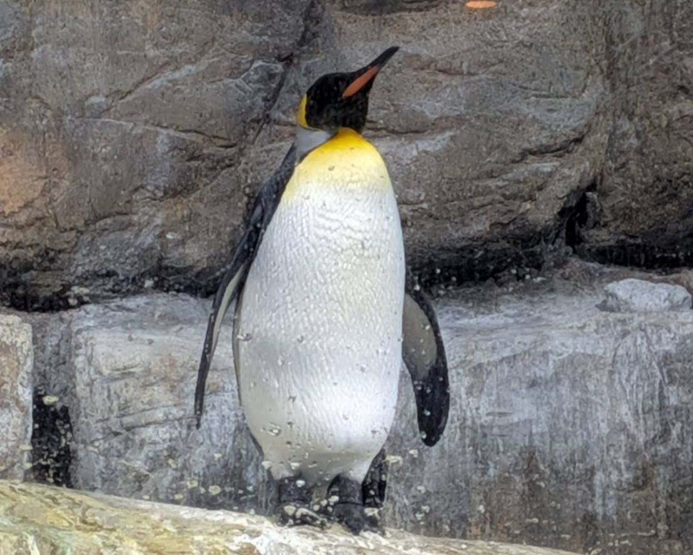
オウサマペンギン
オウサマペンギンは、コウテイペンギンに次ぐ2番目に大きなペンギンで、頭部と首から胸にかけての鮮やかなオレンジ色の模様が特徴です。南極周辺の亜南極の島々に生息し、巣を作らずに1個の卵を足の上で温めて育て、ヒナは集団保育を行います。日本でも多くの水族館で飼育されており、その優雅な姿やパレードが人気を集めています。
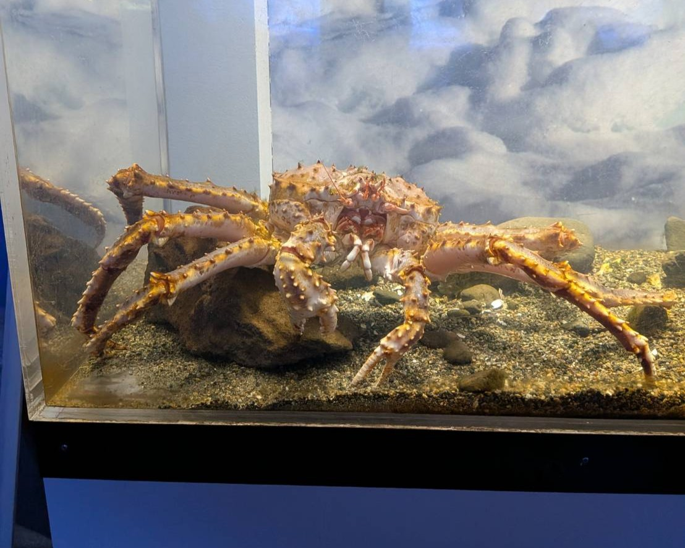
タラバガニ
タラバガニは、味がとても美味なことからカニの王様、英名では「King crab」と呼ばれているが、実はカニではなくヤドカリの仲間。脚の本数で見分けることができ、カニの仲間は8本だが、タラバガニはヤドカリの仲間なので6本しかない。
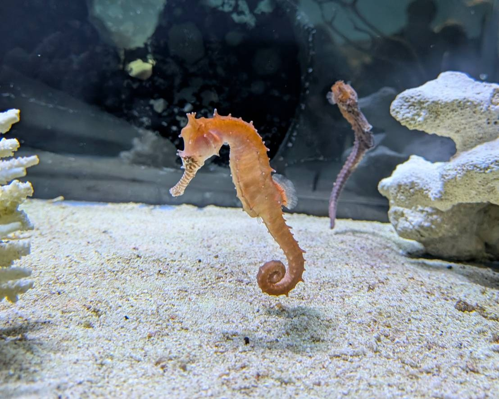
ゼブラスナイトシーホース
ゼブラスナイトシーホースは、主にインドネシアに分布するタツノオトシゴの一種。その名の通り鼻先がゼブラ柄で、身体の節がトゲトゲしているのも特徴的。
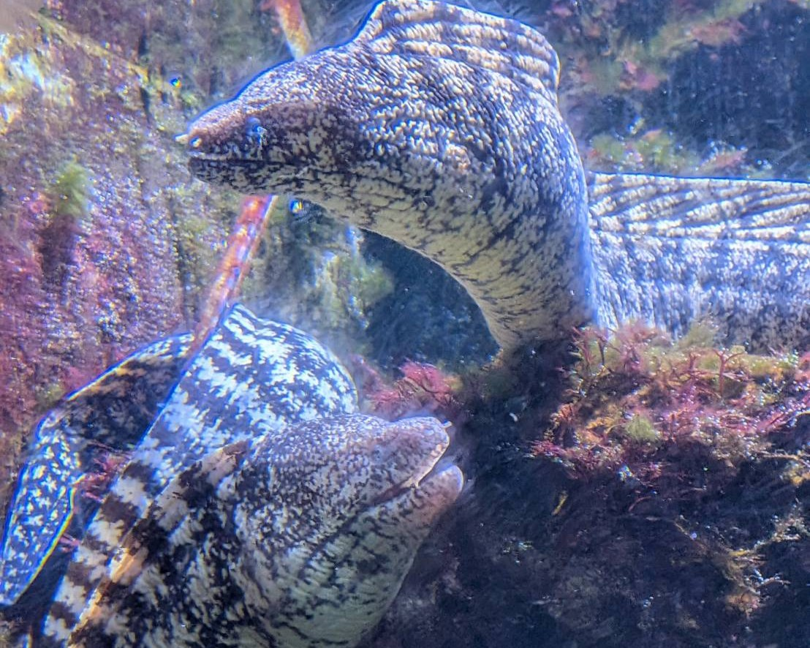
ウツボ
ウツボは、温かい海の岩礁などに生息し、鋭い歯と大きな口が特徴です。うろこがなく、胸びれと腹びれがないためウナギの仲間に分類され、夜行性で岩穴に潜み、小魚や甲殻類などを待ち伏せて捕食する肉食魚で、「海のギャング」とも呼ばれますが、基本的には臆病で危害を加えない限り襲ってこないとされます。
陸のいきもの
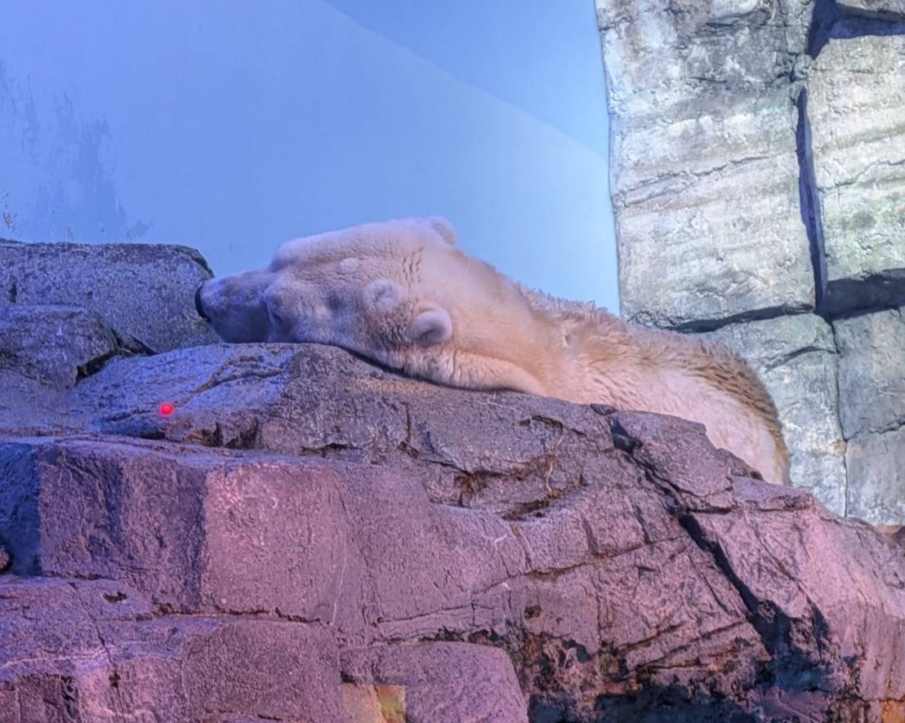
ホッキョクグマ
ホッキョクグマは、北極圏に生息する陸上最大の肉食動物で、白く見える毛は実は透明で、皮膚は黒く、体温調節とカモフラージュに役立っています。泳ぎと走るのが得意で、アザラシなどを主食とし、地球温暖化による生息環境の悪化が懸念されていますが、シャチ以外の天敵はほとんどいません。
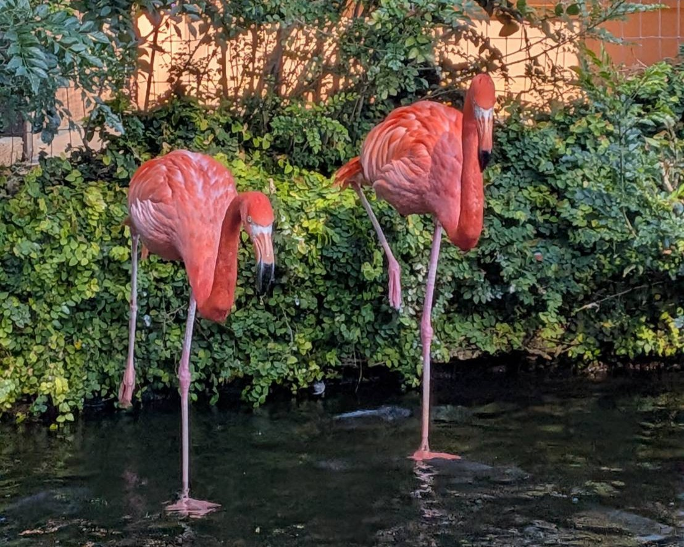
ベニイロフラミンゴ
ベニイロフラミンゴは、フラミンゴの中で一番大きく、名前の通り鮮やかな紅色の羽が特徴。数千羽から百万羽にもなる大きな群れを作って生活する。
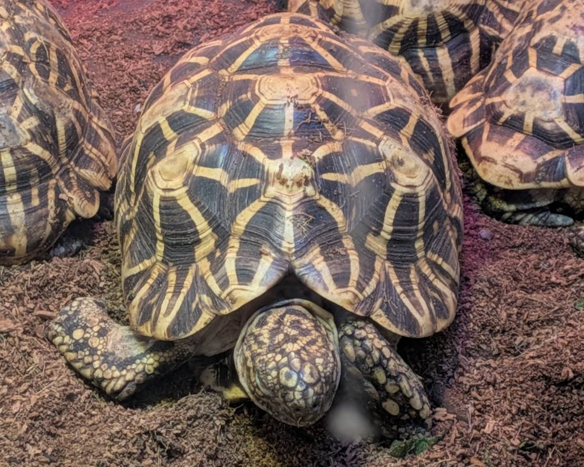
インドホシガメ
インドホシガメは、インド、パキスタン、スリランカなどに生息する美しい星形模様が特徴のリクガメで、草食性、甲長は最大30～40cmほどになり、ペットとしても人気ですが、密輸が問題となっています。
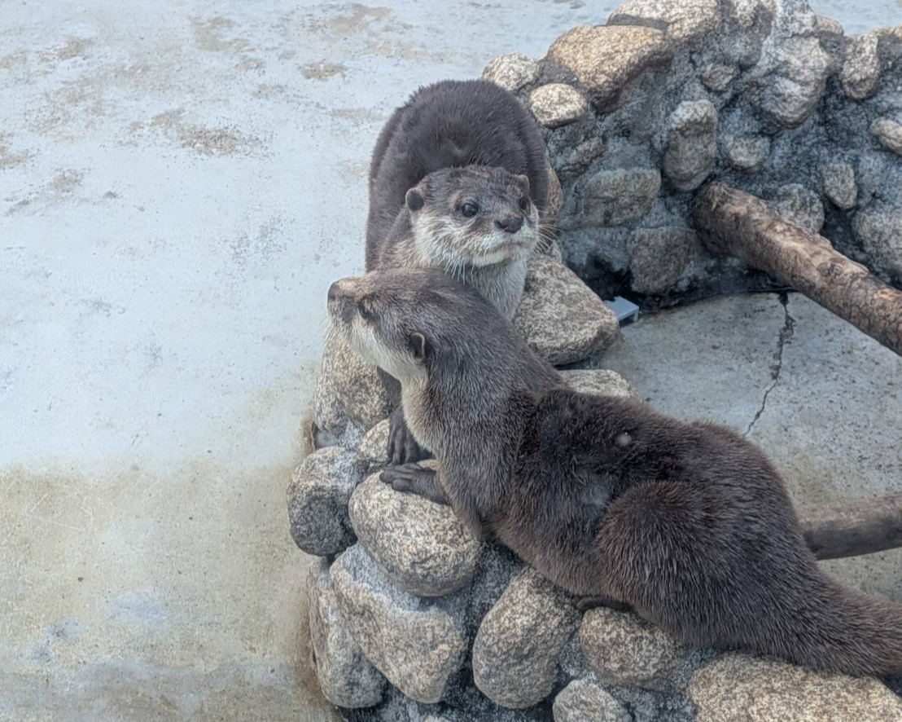
カワウソ
カワウソは、イタチ科に属する水辺に生息する肉食哺乳類の総称で、流線型の体と水かきのある手足が特徴です。魚などを主食とし、泳ぎが得意で、世界中に約13種が存在します。
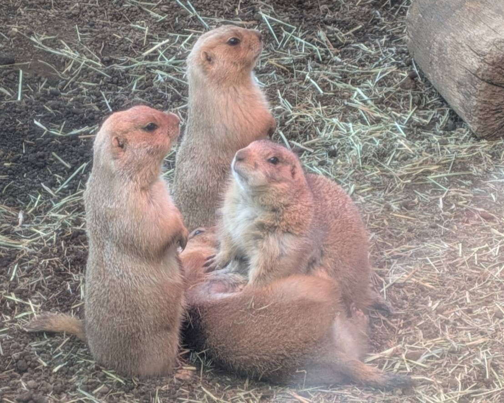
オグロプレーリードッグ
オグロプレーリードッグは、北アメリカの草原に生息するリスの仲間で、「キャンキャン」という犬のような鳴き声と尾の先に黒い毛があるのが特徴です。地中に複雑な巣穴を作り、「コテリー」と呼ばれる家族単位の群れで生活し、見張り役が危険を知らせるなど高い社会性を持つ動物で、ペットとしても人気があります。
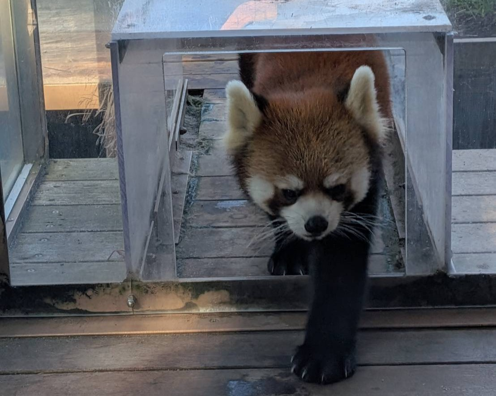
レッサーパンダ
レッサーパンダは、ヒマラヤ山脈や中国南西部の山岳地帯に生息する、赤茶色の毛並みが特徴の哺乳類で、ジャイアントパンダとは別の独立した科に属する動物です。主に笹や竹の葉を食べ、木登りが得意で、樹上で生活する夜行性で、手首の指状の骨で竹などを器用に掴みます。名前は、先に発見された「パンダ」より小型であることに由来し、絶滅危惧種に指定されています。
深海のいきもの
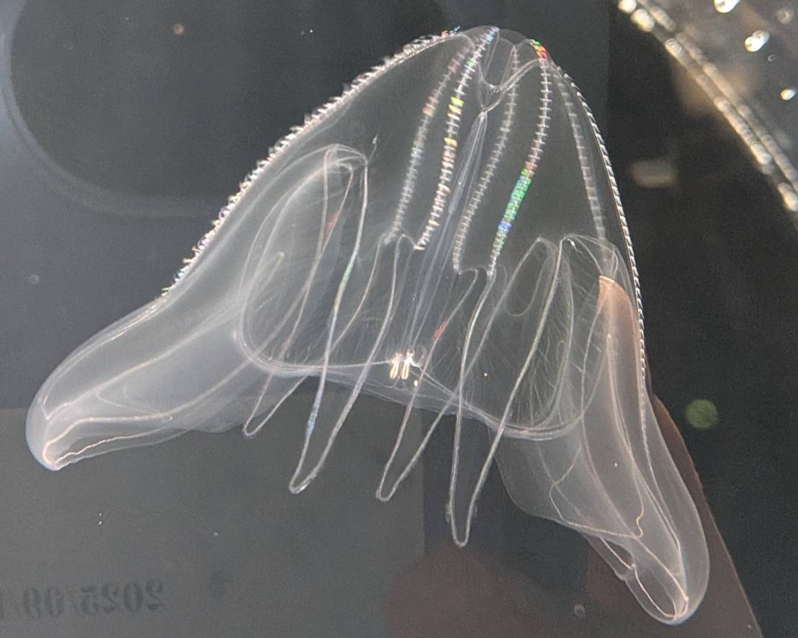
カブトクラゲ
カブトクラゲは、深海に生息し、水深500m～1000mからも報告される有櫛動物で、触手で刺さないのが特徴、櫛板列の光の反射で虹色に輝き「深海のイルミネーション」とも呼ばれますが、本当は刺胞動物のクラゲとは別グループのクシクラゲの仲間です。
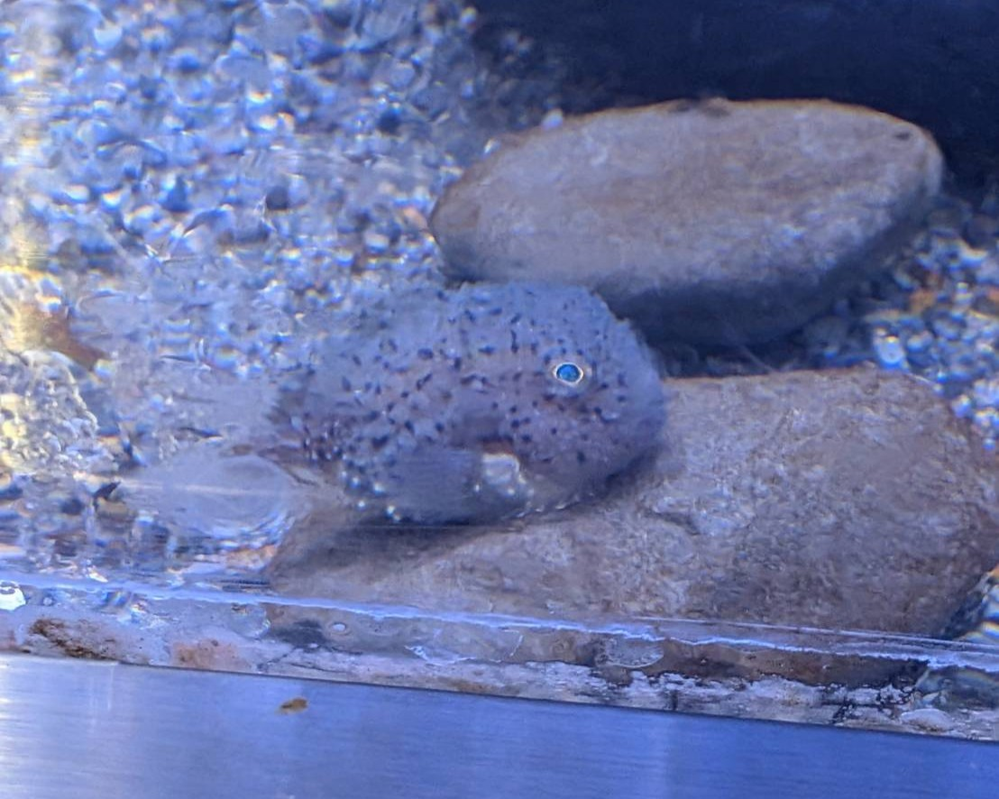
コンペイトウ
コンペイトウは、まん丸な体、つぶらな瞳と半開きの口の持ち主。体の表面にある三角形のイボがお菓子の金平糖に似ていることから名前がつけられた。腹部には吸盤があり、岩や水槽に張り付いていることが多い。
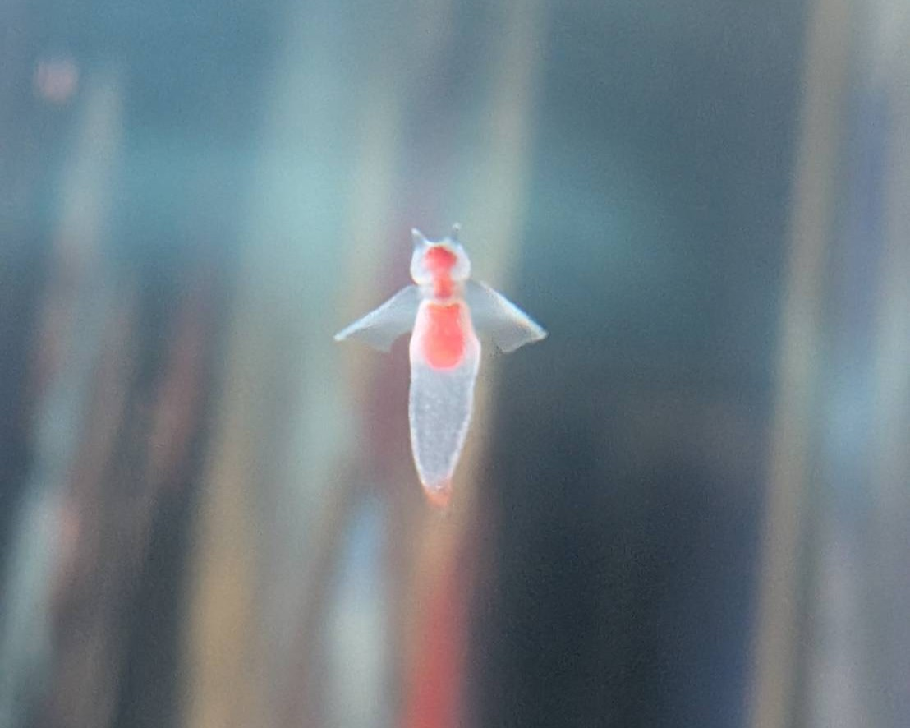
クリオネ
クリオネは、貝殻を持たない巻貝の仲間で「流氷の天使」とも呼ばれる小さな生物です。翼のような器官「翼足」を羽ばたかせ、冷たい海を漂い、ミジンウキマイマイという貝を捕食する際、頭部から6本の触手を伸ばす姿が特徴的です。
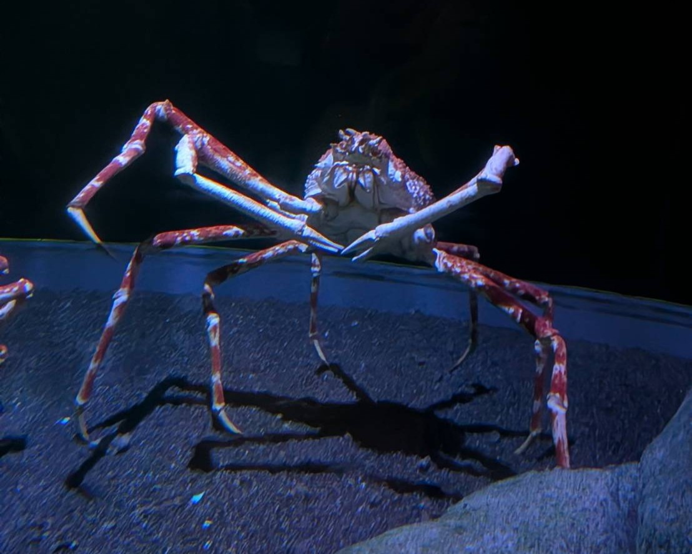
タカアシガニ
タカアシガニは、脚を広げると3mを超える世界最大のカニで、日本近海の深海（水深200～600m）に生息するクモガニ科の甲殻類です。クモのような長い脚が特徴で、甲羅は洋梨型をしており、若い個体は海藻などを付けてカモフラージュします。